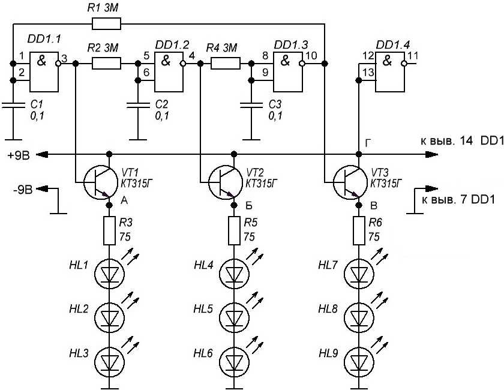

Автомат световых эффектов “Пропеллер”
Схема автомата световых эффектов “Пропеллер” на микросхеме К561ЛА7 показана на рис. 1.

Таблица 1
| Обозначение | Наименование | Номинал | Количество | Примечание |
|---|---|---|---|---|
| C1-C3 | Конденсатор | 0,1 мкФ | 3 | |
| DA1 | Микросхема | К561ЛА7 | 1 | К561ЛЕ5 |
| HL1-HL9 | Светодиод | АЛ307 | 9 | |
| R1, R2, R4 | Резистор постоянный | 3 МОм/0,125 Вт | 3 | |
| R3, R5, R6 | Резистор постоянный | 75 Ом/0,25 Вт | 3 | |
| VT1-VT3 | Биполярный транзистор | КТ315 | 3 | КТ315(А-Г), КТ3102 |
Частота переключений светодиодов в схеме зависит от номиналов резисторов R1-R3 и конденсаторов С1-С3 и рассчитывается по формуле:
F= 0,32/(RC),
где:
R – сопротивление (R1, R2 или R3) в Омах;
С – емкость (С1, С2 или С3) в Фарадах.
Для резисторов R1-R3 с сопротивлением 3 МОм и конденсаторов С1-С3 с емкостью 0,1 мкФ частота переключения светодиодов:
F = 0,32/(3000000 · 0,0000001) = 0,32/0,3 = 1,066 Гц = 1 Гц
Вместо неполярных конденсаторов С1-С3 в схеме можно применить полярные, подключив минусовой вывод на общий провод.
Источники
radio-stv.ru - Собираем автомат световых эффектов
zen.yandex.ru - Радиоконструктор 018 - Автомат световых эффектов (бегущая волна)